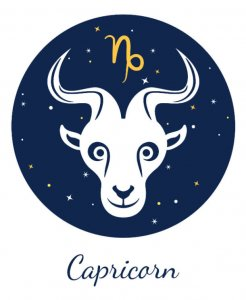

←
CAPRICORN AND AQUARIUS COMPATIBILITY-



Capricorn and Aquarius Nature and Nuances:
Communication :
Pros of the Capricorn Aquarius Relationship:
The biggest plus of Capricorn and Aquarius relationship compatibility is that they both like to take things slow and are not interested in inflicting a whirlwind of emotions on each other. The mystery and charm of an Aquarian brings an unusual sense of calm to the goat's strained mind. Capricorn, on the other hand, helps add realism to the Aquarian's dreamy plans and gives him/her a practical roadmap to materialize them.
While most pairs struggle to maintain mutual trust in the relationship, this particular box is readily ticked in the Aquarius-Capricorn association. The former truly believes in the power of honesty and the latter holds himself/herself to very high standards of loyalty and commitment. This gives them both a steady sense of respect for each other and the universal truth is trust is invariably built on the roots of understanding.
Cons of the Capricorn Aquarius Relationship:
Capricorn believes in leading its life in a planned, meticulous manner. Contrarily, the Aquarian soul yearns for adventure, exploration and exhilaration. This can be a massive cause for conflict in this relationship, as one fails to understand the drives and desires of the other.
The judgmental nature of the Capricorn sun sign might become too much to handle for the Aquarius, who can stand anything but the feeling of being constrained. On the other hand, the breezy and careless attitude of the air sign might dance on the nerves of the Capricorn, who cannot stand irresponsible behavior.
The goat prides itself over its tenacity and practicality, while trying to rule out every possibility of chaos and/or clutter in their future. The unpredictable attitude of the Aquarian stands right in the way of that very process, thereby making it difficult for the Capricorn to accept the eccentricity of his/her partner.
Love :
The Capricorn and Aquarius love match will take time to develop in the relationship. Both zodiac sun signs are reserved when it comes to opening up to others, and will take time to trust each other with their vulnerabilities and insecurities. However, once the relationship is past its initial stage, it will be a stable and positive aspect of the lives of the individuals involved.
They are both ruled by Saturn, which certainly cultivates a degree of familiarity between the two. Capricorn man and Aquarius woman and vice-versa are both visionaries and thus, can understand each other's passion for life.
Compatibility:
Capricorns are characterized by their determination, dedication, and a steadfast approach to life. They take everything on its merit and have the capacity to put emotion on the side and solve every problem with the tools of logical reasoning and understanding. The goat is conservative and pragmatic at all times.
An Aquarius sun sign is characterized by its high intellectual capacity, cerebral strength and open-minded attitude. Those born under this sign require the freedom to express themselves and their opinion without any qualms. They have an undeniable energy that might lean towards eccentricity at times.
- The biggest plus of Capricorn and Aquarius relationship compatibility is that they both like to take things slow and are not interested in inflicting a whirlwind of emotions on each other. The mystery and charm of an Aquarian brings an unusual sense of calm to the goat's strained mind. Capricorn, on the other hand, helps add realism to the Aquarian's dreamy plans and gives him/her a practical roadmap to materialize them.
While most pairs struggle to maintain mutual trust in the relationship, this particular box is readily ticked in the Aquarius-Capricorn association. The former truly believes in the power of honesty and the latter holds himself/herself to very high standards of loyalty and commitment. This gives them both a steady sense of respect for each other and the universal truth is trust is invariably built on the roots of understanding.
- Capricorn believes in leading its life in a planned, meticulous manner. Contrarily, the Aquarian soul yearns for adventure, exploration and exhilaration. This can be a massive cause for conflict in this relationship, as one fails to understand the drives and desires of the other.
The judgmental nature of the Capricorn sun sign might become too much to handle for the Aquarius, who can stand anything but the feeling of being constrained. On the other hand, the breezy and careless attitude of the air sign might dance on the nerves of the Capricorn, who cannot stand irresponsible behavior.
The goat prides itself over its tenacity and practicality, while trying to rule out every possibility of chaos and/or clutter in their future. The unpredictable attitude of the Aquarian stands right in the way of that very process, thereby making it difficult for the Capricorn to accept the eccentricity of his/her partner.